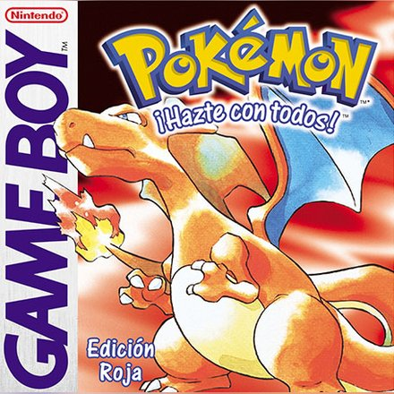
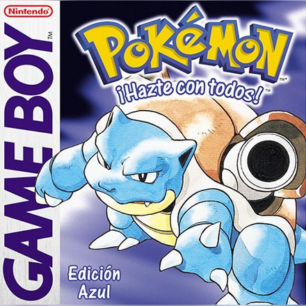
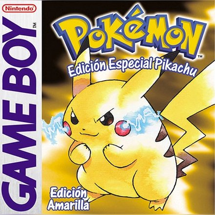
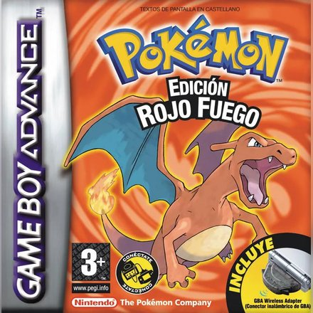
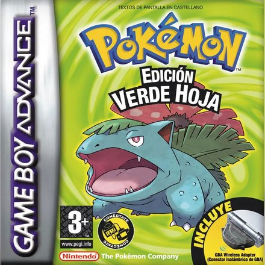
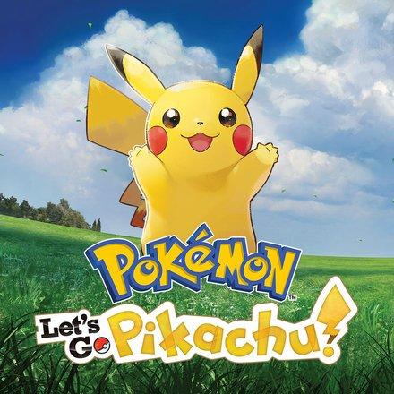
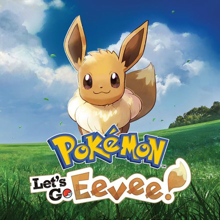
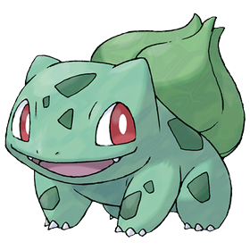
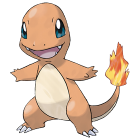
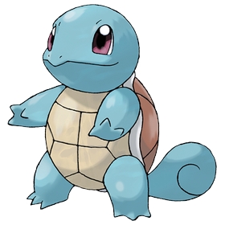

Pokémon Rojo
Game Boy · 1996
Región de Kanto · Rojo y Azul (1996)
Kanto es la primera región Pokémon y está inspirada en la región de Kantō, en Japón. Tiene pueblos pequeños como Pueblo Paleta, ciudades grandes como Ciudad Azafrán y lugares que todo el mundo recuerda, como el Bosque Verde, el Monte Moon o la Torre Pokémon de Pueblo Lavanda.
En Kanto opera el Team Rocket, una banda que usa a los Pokémon para robar y hacer negocios. Su jefe es Giovanni, que a la vez es el líder del gimnasio de Ciudad Verde. En la región se esconden los tres pájaros legendarios (Articuno, Zapdos y Moltres) y Mewtwo, un Pokémon creado en un laboratorio a partir de Mew.
El protagonista vive en Pueblo Paleta. El Profesor Oak le regala su primer Pokémon y una Pokédex, y le pide que la complete. Su nieto se convierte en su rival. Para ser Campeón tiene que ganar las ocho medallas de gimnasio y vencer al Alto Mando en la Meseta Añil.


Game Boy · 1996

Game Boy · 1996

Game Boy · 1998

Game Boy Advance · 2004

Game Boy Advance · 2004

Nintendo Switch · 2018

Nintendo Switch · 2018


